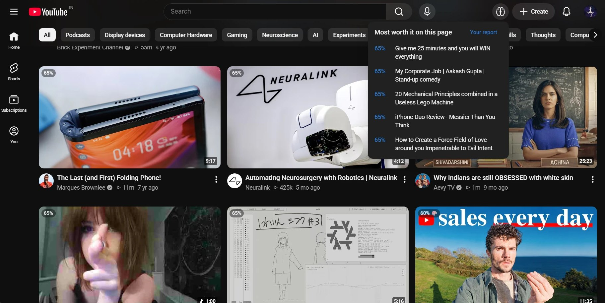
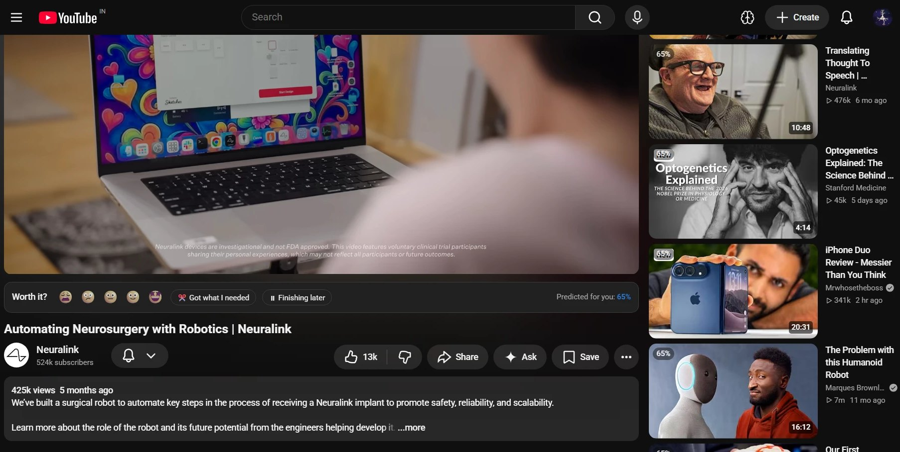
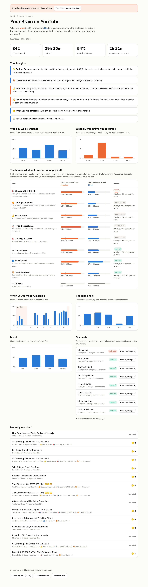

A free Chrome extension for YouTube
Worth It?
YouTube learns what you click. Worth It? learns what you’re actually glad you watched, then flags the junk food on your feed and points you to what’s worth your time.
Version 1.0.0 · free and open source · nothing leaves your computer

The idea
Wanting and liking run on separate brain systems
That’s why you can keep clicking on things that don’t make you happy. A recommender trained on clicks only ever sees one side.
Wanting
The pull
A dopamine-driven urge set off by a cue: a thumbnail, a title, a notification. It can keep growing with repetition even when the reward doesn’t.
Liking
The payoff
How much you actually enjoy it, handled by different circuits. It can stay flat while the pull keeps climbing.
Based on Kent Berridge & Terry Robinson’s incentive-salience research.

One question
Rate it in one tap, right under the video
A slim bar between the player and the title asks “Worth it?” with five faces. No popups. Change your answer any time, and the bar lights up when the video ends.
It learns quietly too: finishing most of a video is a weak yes, leaving within seconds a small no, rewatching a strong yes.

Your track record
Junk food, judged on your own ratings
It spots eight attention hooks in titles and thumbnails, from curiosity gaps to outrage. But a verdict only comes from how you rated a channel or hook, once the evidence is confident:
- Risky a thin orange outline: your ratings lean against it
- Junk food blurred, so the cue pulls less; hover to reveal
- Worth it a green tick: a record of paying off for you
The “Your Brain on YouTube” report shows your week-by-week trend, your triggers and every channel’s verdict. Shown with demo data.
You stay in charge
Verdicts that are fair, and yours to overrule
Your rating wins
Rate a video Waste or Meh and it’s junk food. Good or Loved it, and it never is, whatever the channel.
Overrule any channel
Click a badge to see why it was flagged, then choose “isn’t junk for me” or “always flag”.
Old ratings fade
A rating counts half as much after 90 days, so a channel that changed gets re-judged on its own.
Pick how strict
Gentle, medium or strict, from the toolbar popup. It re-judges everything at once.
Install in two minutes
Get Worth It? for Chrome
- Download worth-it.zip and unzip it. You’ll get a folder called
worth-it. - In Chrome, open
chrome://extensions. - Turn on Developer mode (top right).
- Click Load unpacked and choose the
worth-itfolder. - Pin the extension’s icon, then open YouTube and browse as usual.
Works in Chrome and other Chromium browsers on desktop (Edge, Brave, Arc). Want to see the report before you have data? Open it from the toolbar icon and click Load demo data.
Privacy
Everything stays in your browser
Your ratings, models and history live in Chrome’s local storage on your computer. The only request the extension makes itself is fetching thumbnails from YouTube’s image server, to measure how loud they look.